再续前缘
第一篇文章，我们从零开始，一步一步走到最后，构建了一个似乎并没有卵用的APP。但是，我们做了大量的基础工作，不就是为了在接下来的继续更轻松自信些嘛！
其实，第一篇的信息量还是很大的，里面的每一个链接都是通往一个新知的大门，如果你觉得掌握得差不多了，那就开始新的旅（Che）程（Dan）吧！
第二篇文章也是分五小节叙述，每一节完成一个小功能，最终召唤出还算有点卵用的APP。
1.召唤出壁纸和作者
首先，我们先研究下数据，下面是从Unsplash获取的一个数据实例：
1 | { |
要想获取该实例的图片，在浏览器中输入以下格式的URLhttp://unsplash.it/{width}/{height}?image={id}，换算到该实例即：http://unsplash.it/4320/3240?image=102。这样，我们就能拿到一张壁纸的地址了。我们可以用Image组件中的source来把图片加载出来。
但是，进一步想了想，这么大的图片会有一定的加载时间，最好能有个图片的加载进度什么的，让用户不再一脸懵逼地等着。一开始就做对，后面的修改成本会小很多，有两个组件的组合能够做到预期效果：
image-native-progress和react-native-progress。
在项目根目录下运行命令：npm i --save react-native-image-progress react-native-progress，然后，我们在index.ios.js中引用：1
2var NetworkImage = require('react-native-image-progress');
var Progress = require('react-native-progress');
既然要做手机壁纸应用，那么就应该得到手机屏幕的长和宽：1
var {width, height} = React.Dimensions.get('window’);
哦对了，为了去掉烦人的React.Dimensions，可以在头部引入Dimensions组件：1
2
3
4
5
6
7
8
9
10import {
AppRegistry,
StyleSheet,
Text,
View,
ActivityIndicatorIOS,
/***/
Dimensions
/***/
} from 'react-native';
这样，我们就可以在renderResults中使用NetworkImage了：1
2
3
4
5
6
7
8
9
10
11
12
13
14
15<Swiper ... >
{wallsJSON.map((wallpaper, index) => {
return(
/***/
<View key={index}>
<NetworkImage
source={{uri: `https://unsplash.it/${wallpaper.width}/${wallpaper.height}?image=${wallpaper.id}`}}
indicator={Progress.Circle}
style={styles.wallpaperImage}>
</NetworkImage>
</View>
/***/
);
})}
</Swiper>
注：此处NetworkImage的uri特性用到了ES6的模板字符串特性，懵逼的同学去上一篇文章找链接复习一下哈。
再加个样式：1
2
3
4
5
6wallpaperImage: {
flex: 1,
width: width,
height: height,
backgroundColor: ‘#000’
}
保存然后刷新模拟器，不出意外的话…你将看到一堆报错的页面。
别慌，我们来研究下刚刚加的代码，注意到indicator={Progress.Circle}没有？在react-native-progress文档里有提到（别告诉我你没看文档(╯‵□′)╯︵┻━┻），Progress.Circle需要ReactART：使用React来画矢量图的类库。我们不需要下载任何新东西，只需要通过Xcode将其引入到项目中。
很简单，只是有点繁琐：
- 移步
node_modules/react-native/Libraries/ART/
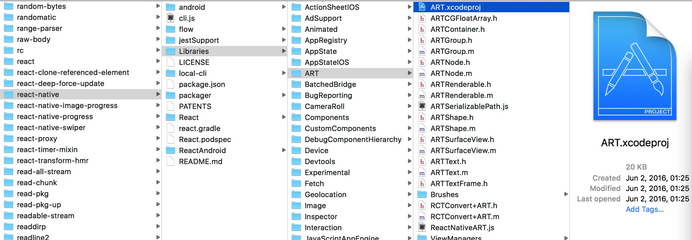 - 将ART.xcodeproj拖拽到Xcode的PIW/Libraries下
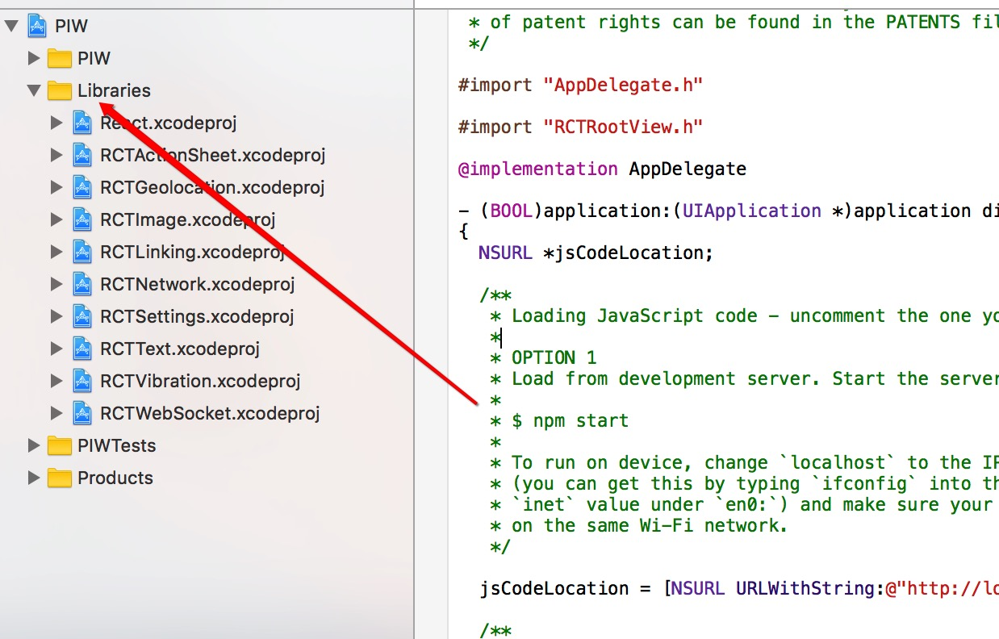 - 定位到Build Phases，友情提示：它与General,Capabilities等同级。

- 将ART.xcodeproj/Products下的libART.a拖拽到Build Phases下的Link Binary With Libraries条目下：

就这么简单，全是些拖拖拽拽的活儿。
然后，刷新模拟器。酷！我们已经能够看到带加载进度的壁纸，并且能左右滑动浏览。有没有碰到心动的图片？载下来？莫慌，待会儿来满足你。现在，我们先修改下进度提示的样式，这个在NetworkImage下的indicatorProps可以设置：1
2
3
4
5
6
7
8
9
10
11
12<NetworkImage
source={{uri: `https://unsplash.it/${wallpaper.width}/${wallpaper.height}?image=${wallpaper.id}`}}
indicator={Progress.Circle}
style={styles.wallpaperImage}>
/***/
indicatorProps={{
color:'rgba(255,255,255,0.8)',
size:50,
thickness:4
}}
/***/
</NetworkImage>
修改后进度提示应该长这样：
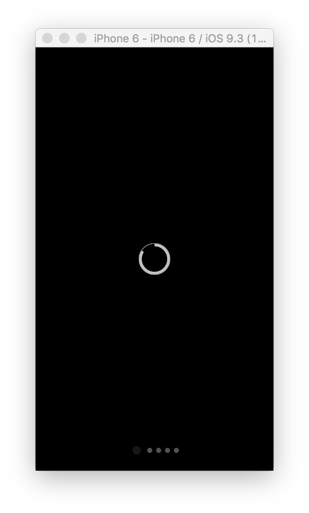
接下来，把图片的作者名字加上，我们要做尊重知识版权的好公民：1
2
3
4
5
6
7
8<NetworkImage
...
>
/***/
<Text style={styles.label}>Photo by</Text>
<Text style={styles.label_author_name}>{wallpaper.author}</Text>
/***/
</NetworkImage>
别忘了创建各自对应的样式对象：
1 | label:{ |
来来来，我们瞅瞅加了作者后的效果：
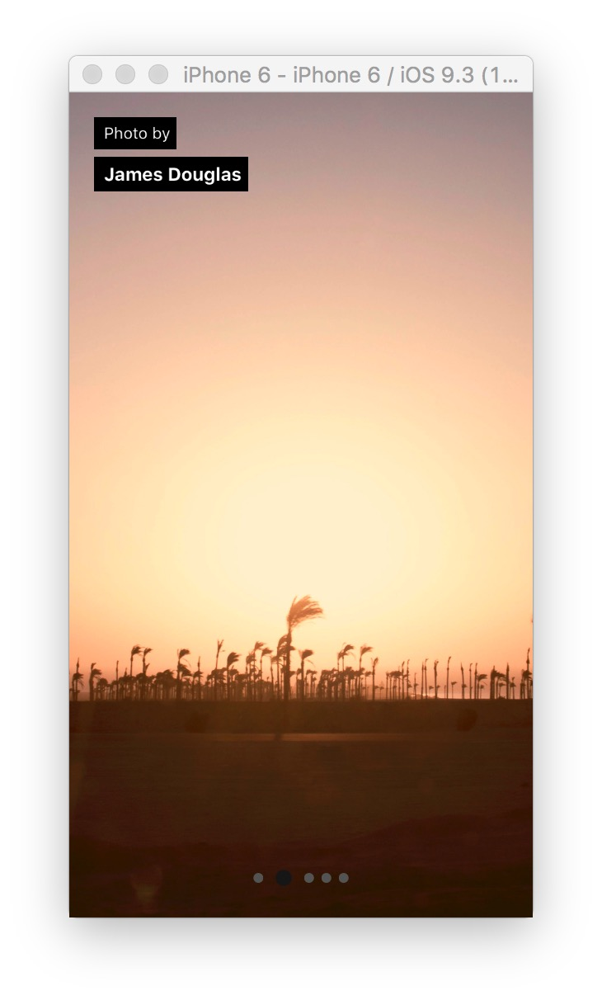
有木有瞬间感觉像那么回事儿了！
走到这儿，这一节算完事儿了，为了能下载壁纸，我们将在下一节做一些更加有技术含量的事儿。
2. 捕捉双击操作(Double-Taps)
这一节我们要用到的是PanResponder，这个API能做一些很酷的事情，比如捕捉双击操作。
其实，如果偷懒，完全可以在页面上放一个下载按钮，点击就下载，完活儿！但是，我们要做就做有逼格的事儿，双击图片下载就很符合这个档次，恩，撸起袖子干吧！
在开始之前，最好阅读一遍PanResponder API文档，因为你不读一遍，也不知道这个文档其实也没啥卵用o(╯□╰)o。不过我们至少知道了PanResponder的基本用法，这就够了。
废话少说，开始撸代码。首先，在构造函数里声明一个新对象：1
this.imagePanResponder = {};
别忘了在顶部引入PanResponder的声明：1
2
3
4
5
6
7
8
9
10import {
AppRegistry,
StyleSheet,
Text,
View,
ActivityIndicatorIOS,
/***/
PanResponder
/***/
} from 'react-native';
接下来我们要做两件事：
- 创建一个
PanResponder并赋值imagePanResponder - 将
imagePanResponder关联到<NetworkImage>组件
为了完成第一件事，需要新增一个生命周期函数:componentWillMount。这个函数只有在组件首次渲染时才会触发，所以非常适合用于初始化PanResponder：1
2
3
4
5
6
7
8componentWillMount() {
this.imagePanResponder = PanResponder.create({
onStartShouldSetPanResponder: this.handleStartShouldSetPanResponder,
onPanResponderGrant: this.handlePanResponderGrant,
onPanResponderRelease: this.handlePanResponderEnd,
onPanResponderTerminate: this.handlePanResponderEnd
});
}
初始化完了，就可以将这些事件关联到NetworkImage组件了：
1 | . |
注：...是ES6中的扩展运算符，如果懵逼，请移步这里充电。
一般来说，一个触摸事件有三个阶段：开始（start）、移动（move）、释放（release），一个组件能够通过声明响应特定的触摸事件。PanResponder.create({...下提到的第一个事件onStartShouldSetPanResponder，从英文名字的意思大概也能猜出，这是在请求是否能将PanResponder绑定在该组件上。紧跟其后是一个方法this.handleOnStartShouldSetPanResponder，用于响应该事件，若该方法返回true，则通过请求，然后才能谈下一步，false则相反。所以，你应该知道在此我们应该返回什么，认清你的阶级立场，同志，老大哥在看着你：1
2
3handleStartShouldSetPanResponder(e, gestureState) {
return true;
}
紧随其后的onPanResponderGrant是在一旦有了触摸时触发，在此我们先打印一个信息占个坑：1
2
3handlePanResponderGrant(){
console.log("手指触摸到屏幕啦~~~");
}
最后两个事件从字面上也都能自解释，在手指离开屏幕时，都能触发，在此我们还是先打印信息占个坑：1
2
3handlePanResponderEnd(){
console.log("手指离开屏幕啦~~~");
}
保存代码，壁纸一旦加载完毕，点击一下，应该会看到如下打印信息：
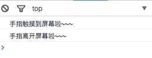
OK，基于这些认知，我们可以开始捕捉双击操作了。判断是否为双击操作的关键是需要知道上一操作的信息：触摸发生的坐标和时间戳。在构造函数新增对象prevTouchInfo用于保存触摸信息：1
2
3
4
5this.prevTouchInfo = {
X: 0,
Y: 0,
timeStamp: 0
};
然后，在handlePanResponderGrant更新这个对象(注意代码的次序)：
1 | handlePanResponderGrant(e, gestureState) { |
handlePanResponderGrant在每次单击时都会触发，但是有个地方需要特别注意：此处的this并不是指向PIW类，而是PanResponder，为了正确的引用，我们需要在构造函数使用bind重新定向一下。而如果我们一开始选用React.createClass({ ... })来创建组件，就不会存在这个问题，autobinding会帮我们搞定这个问题。也算有得有失吧:
1 | this.handlePanResponderGrant = this.handlePanResponderGrant.bind(this); |
isDoubleTap是我们预先埋好的坑，下面我们填上它：1
2
3
4
5
6isDoubleTap(currentTouchTimeStamp, {x0, y0}) {
var {X, Y, timeStamp} = this.prevTouchInfo;
var dt = currentTouchTimeStamp - timeStamp;
return (dt < DOUBLE_TAP_DELAY && Utils.distance(X, Y, x0, y0) < DOUBLE_TAP_RADIUS);
}
好吧，你可能会注意到了，坑里有坑：
DOUBLE_TAP_DELAY和DOUBLE_TAP_RADIUS是我们定义的常量，需要在头部初始化一下:1
2const DOUBLE_TAP_DELAY = 400; // milliseconds
const DOUBLE_TAP_RADIUS = 20;新建一个模块utils.js，暴露出
distance：1
2
3distance(x0, y0, x1, y1) {
return Math.sqrt( Math.pow(( x1 - x0 ), 2) + Math.pow(( y1 - y0 ), 2) );
}
distance是用来计算两个坐标之间的直线距离，还记得中学的几何公式吗？
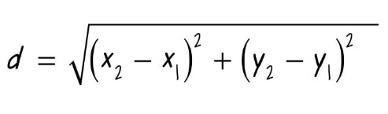
handlePanResponderGrant最后一步是更新prevTouchInfo。
保存代码，等壁纸加载完毕，双击屏幕，如果不出意外的话，控制台里会输出:双击操作。
3.将壁纸保存到本地相册
现在我们能捕捉到双击的手势了，也就可以开始着手撸保存壁纸的代码了。首先，我们把console代码替换成一个调用的方法，先占坑。1
2if( isDoubleTap(currentTouchTimeStamp, gestureState) )
this.saveCurrentWallpaperToCameraRoll();
一会儿我们再来实现saveCurrentWallpaperToCameraRoll，下面我们先来看另一个问题：壁纸有五张，如何定位当前的这一张？
我们可以通过从零开始的索引来定位当前图片，每滑动一次就加1或者减1:1
this.currentWallIndex = 0;
还记得上一篇我们预留的一个坑位吗？Swiper里的onMomentumScrollEnd，在该方法里更新currentWallIndex：1
2
3onMomentumScrollEnd(e, state, context) {
this.currentWallIndex = state.index;
}
同样的，别忘了在constructor里绑定this:
1 | this.onMomentumScrollEnd = this.onMomentumScrollEnd.bind(this); |
好了，我们开始为saveCurrentWallpaperToCameraRoll填坑了。为了能访问相册，需要先引入Camera Roll类库，还记得开头是怎么引入ReactART的吗？没错，照做一遍就可以：node_modules/react-native/Libraries/CameraRoll
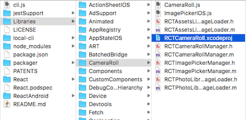
然后就可以导入了：1
2
3
4
5
6
7
8
9
10
11import {
View,
Text,
StyleSheet,
Dimensions,
PanResponder,
/***/
CameraRoll, // 访问相册
AlertIOS // iOS的弹出框
/***/
} from 'react-native';
一旦壁纸保存到相册，我们需要给用户一个保存成功的提示，AlertIOS帮我们做到这一点。现在，我们可以着手实现saveCurrentWallpaperToCameraRoll：1
2
3
4
5
6
7
8
9
10
11
12
13
14
15
16
17
18
19
20saveCurrentWallpaperToCameraRoll() {
var {wallsJSON} = this.state;
var currentWall = wallsJSON[this.currentWallIndex];
var currentWallURL = `http://unsplash.it/${currentWall.width}/${currentWall.height}?image=${currentWall.id}`;
CameraRoll.saveImageWithTag(currentWallURL)
.then((data) => {
AlertIOS.alert(
'保存成功',
'壁纸已保存到本地相册',
[
{text: '好哒!', onPress: () => console.log('OK Pressed!')}
]
);
})
.catch((err) =>{
console.log('Error saving to camera roll', err);
});
}
以上代码都能做到自解释，不懂的地方移步：CameraRoll和AlertIOS，你懂的。
好啦，保存代码，去模拟器体验一下保存壁纸功能：（首次保存需要手动同意获取访问相册的权限）
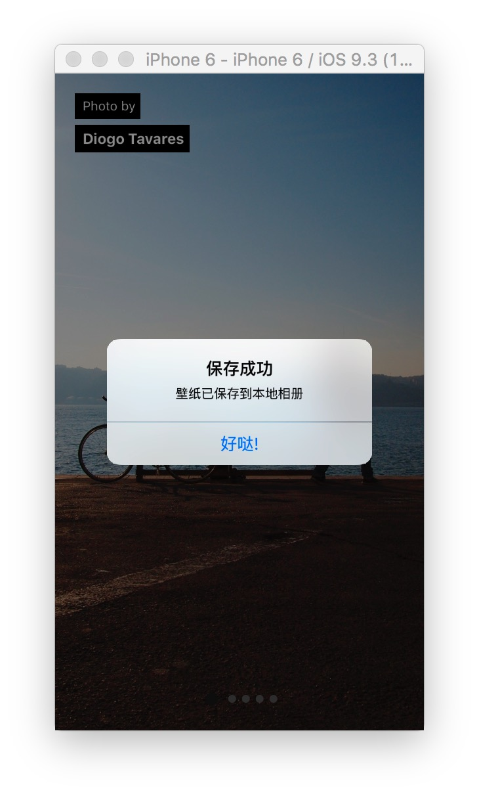
完美！额，等等，从双击到壁纸保存成功，好像有那么几秒的等待时间，用户可能会认为双击不成功，然后再双击一次，这不是我们的期望，下一节专门解决这个问题！
4.创建一个等待组件：Waiting.js
如果没记错的话，我们将创建第一个组件：Waiting.js。这个组件用于异步操作的等待时间，比如保存壁纸到相册的操作，就很有必要加一个等待提示，让用户知道APP在做什么。
在项目根目录新建文件：Waiting.js：1
2
3
4
5
6
7
8
9
10
11
12
13
14
15
16
17
18
19
20
21
22
23
24
25
26
27
28
29
30
31
32
33
34
35
36
37
38
39
40
41
42
43
44
45'use strict';
import {
View,
Text,
Component,
ActivityIndicatorIOS,
} from 'react-native';
class default Waiting extends Component {
constructor(props) {
super(props);
}
render() {
var {width, height, isVisible} = this.props;
if( isVisible ) {
return(
<View
style={{
flex: 1,
flexDirection: 'row',
justifyContent: 'center',
alignItems: 'center',
width: width,
height: height,
position: 'absolute',
top: 0,
left: 0,
backgroundColor: 'rgba(0, 0, 0, 0.5)'
}}>
<ActivityIndicatorIOS
animating={true}
color={'#fff'}
size={'large'}
style={{margin: 15}} />
<Text style={{color:’#fff’}}>正在保存，请稍后...</Text>
</View>
);
} else {
return(<View></View>);
}
}
};
module.exports = Waiting;
render第一行代码作用是从组件的props中获取相应的属性，其中isVisible用于判断是否显示该组件，使用该组件的格式：1
<Waiting width={width} height={height} isVisible={isWaitingVisible}/>
在index.ios.js中引入Waiting.js1
var Waiting = require('./Waiting.js');
为了能控制Waiting组件的显示与隐藏，需要在index.ios.js新增一个状态：1
2
3
4
5
6
7this.state = {
wallsJSON: [],
isLoading: true,
/***/
isWaitngVisible: false // 默认不显示
/***/
};
现在，我们可以在</Swiper之后放入<Waiting>组件了，不过，直接这样做会导致报错，因为React不允许返回多个组件。为了解决这个问题，我们需要用<View></View>再做一个简单的包裹：1
2
3
4
5
6
7
8
9
10
11
12
13
14
15
16
17
18
19renderResults() {
var {wallsJSON, isWaitngVisible} = this.state;
return (
/***/
<View>
/***/
<Swiper
...>
.
.
.
</Swiper>
/***/
<Waiting width={width} height={height} isVisible={isWaitngVisible}/>
</View>
/***/
);
}
既然有了isWaitngVisible状态，我们就应该想一想在哪些时机来改变它的状态：双击触发时置为true，保存成功时置为false，对应到代码就是：1
2
3
4
5
6
7
8
9
10
11
12
13
14
15
16
17
18
19
20
21
22
23
24
25
26
27
28
29saveCurrentWallpaperToCameraRoll() {
/***/
// Waiting 组件显示
this.setState({isWaitingVisible: true});
/***/
var {wallsJSON} = this.state;
var currentWall = wallsJSON[this.currentWallIndex];
var currentWallURL = `http://unsplash.it/${currentWall.width}/${currentWall.height}?image=${currentWall.id}`;
CameraRoll.saveImageWithTag(currentWallURL, (data) => {
/***/
// Waiting 组件隐藏
this.setState({isWaitingVisible: false});
/***/
AlertIOS.alert(
'保存成功',
'壁纸已保存到本地相册',
[
{text: '好哒！', onPress: () => console.log('OK Pressed!')}
]
);
},(err) =>{
console.log('Error saving to camera roll', err);
});
}
模拟器刷新，双击壁纸，等待组件出现，稍后保存成功的弹窗出现，等待组件消失，完美！
额，等等，真的很完美吗？有没有注意到保存完图片，屏幕跳到了第一张图片。这是因为我们在saveWallpaperToCameraRoll调用this.setState()，改变了isWaitingVisible的状态，触发了render()，从而swiper重新加载数据并从第一张图显示。
为了解决这个bug，我们可以通过Swiper的index入手：1
2<Swiper ...
index={this.currentWallIndex}>
这样，就保证了每次重新渲染，都从保存的那张开始。
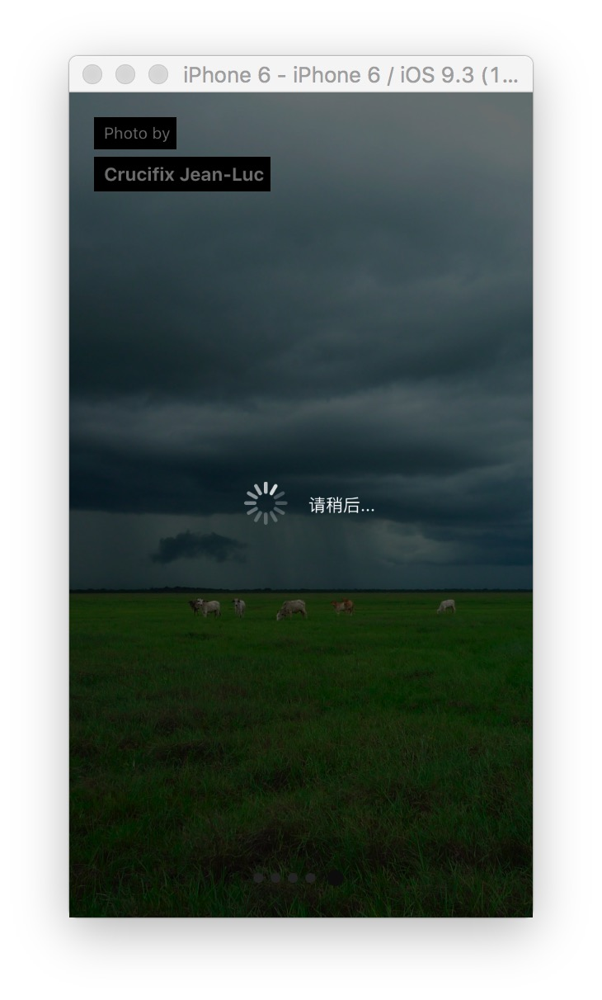
好了，写到这里，我们基本完工一个核心功能完备的小应用：
- 能加载随机精美壁纸
- 能浏览
- 能保存
如果对随机的五张壁纸无感，想换一批，怎么破？当然，我们可以放置一个按钮，点击便能更新随机的壁纸数据，可是…能不能做得酷一些呢？比如只需要摇一摇手机，便更新了一批壁纸！
年轻人，下一节我们做这件酷酷的事儿…
5.摇一摇动作（Shake）和真机测试
为了使我们的APP能够捕捉到摇一摇的动作，需要新增一个模块：react-native-shake-event-ios。项目根目录运行：npm install --save react-native-shake-event-ios。
另外，我们还需要做的是链接相应的类库。如果没记错的话，这是第三次，也是最后一次做这样的操作，我就不多说了，应该熟练了，少年。温馨提示：node_modules/react-native-shake-event-ios/下的RNShakeEvent.xcodeproj
引用该类库：1
var ShakeEvent = require('react-native-shake-event-ios');
我们在componentWillMount新增摇一摇的监听动作：1
2
3
4
5
6
7
8
9
10componentWillMount() {
...
/***/
// 摇一摇，更新数据
ShakeEvent.addEventListener('shake', () => {
this.initialize();
this.fetchWallsJSON();
});
/***/
}
initialize填坑，其实就是初始化各种状态：1
2
3
4
5
6
7
8initialize() {
this.setState({
wallsJSON: [],
isLoading: true,
isWaitingVisible: false
});
this.currentWallIndex = 0;
}
保存代码，接下来我们开始真机测试。当然，如果没有真机，也可以通过快捷键组合：CMD + Ctrl + Z模拟摇一摇操作。不过，我还是期望你有一部真机，因为…这样可以拿来装X啊，少年！
真机测试意味着我们将脱离开发环境，像平时通过AppStore安装APP那样把我们的APP放到手机内。按照官方文档来做，其实很简单：
找到
Xcode/PIW/PIW/AppDeletegate.m，做以下操作：
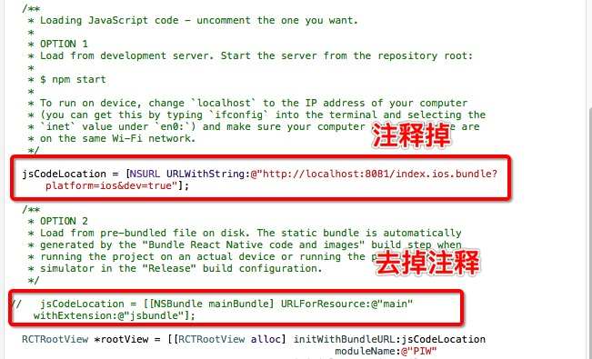Product → Scheme → Edit Scheme或者直接快捷键：CMD + Shift + ,，划入的窗口中将Build Configuration从debug改为Release:
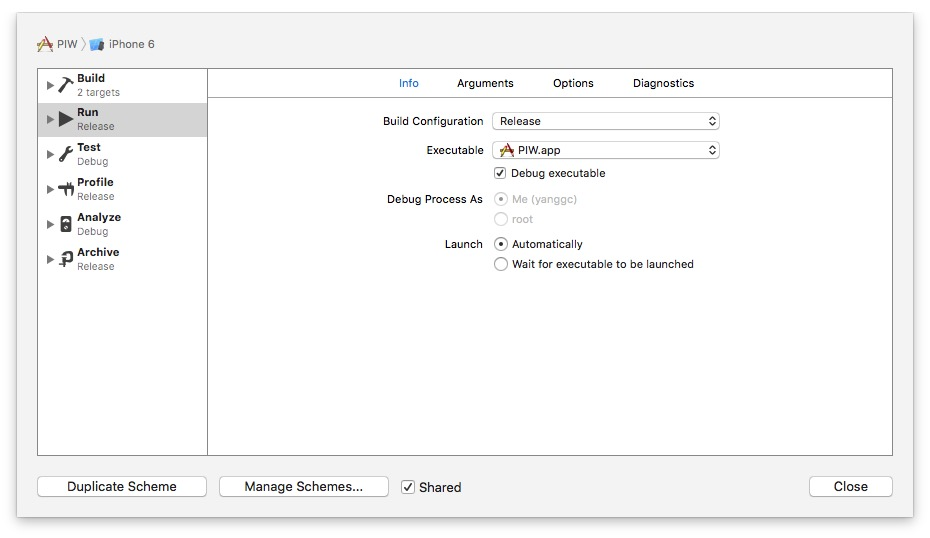
这样做的目的是为了防止摇一摇弹出调试菜单。转向
Build Setting，禁掉Dead Code Stripping，别问我这是为啥，我也不清楚，可能这就是人生，年轻人。
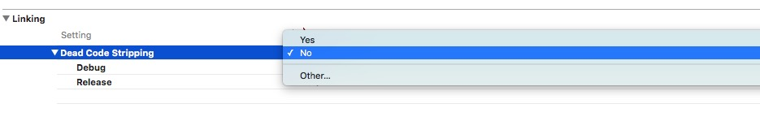
联接你的iPhone到Mac上，选择真机运行：
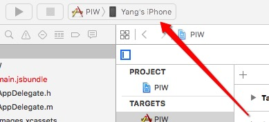
好啦，万事俱备，只欠一个点击。首次打包和安装会持续较长时间，请耐心等候。安装过程中甭管蹦出什么，选择相信就行。注意，如果想恢复到开发环境，把上面的步骤1和步骤2撤销就可以了。
安装完毕，手机桌面上就应该多出一个巨丑的APP图标，没错，那就是这么长时间我们辛苦做出的APP，快快打开体验一番吧！
最后，我们把图标也加上：
- 下载图标文件。当然，你也可以自己按照苹果图标规定来设计一套
- 调转到Xcode
PIW/PIW/Images.xcassets，选择AppIcon - 将图标文件按照规格拖拽到对应的框内，一个萝卜一个坑，so easy!
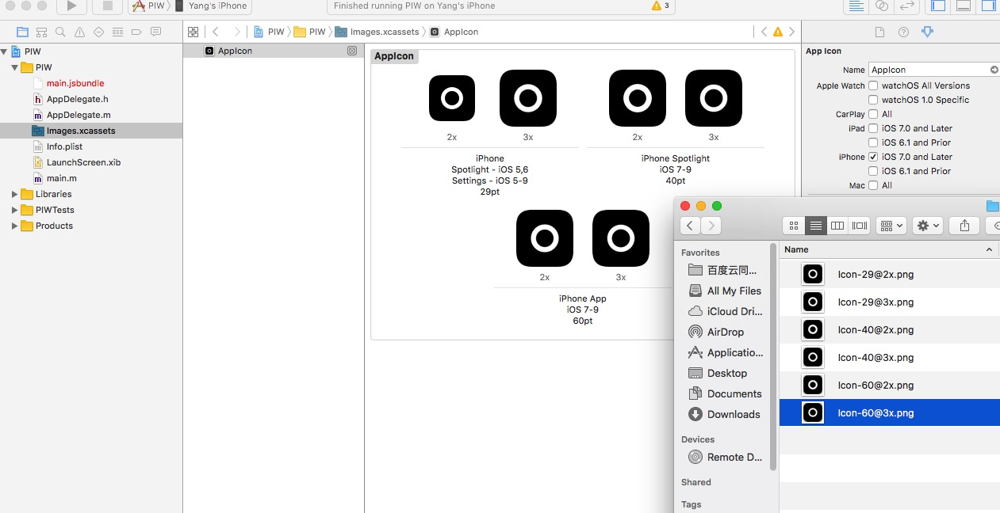
再次打包和运行，这次那个巨丑无比的图标应该不见了。
卧槽，我们目前是不是可以说正式完成了一个APP版本的迭代？是的，我们做到了！
总结
又到了总结时间了，这一次我们都做了哪些事情呢：
NetworkImage组件让我们能够显示出带加载进度的图片PanResponderAPI让我们能够捕捉到双击操作Camera Roll让我们能够将壁纸保存到本地相册Waiting是我们首个自定义的组件，让用户在保存壁纸的同时不再懵逼react-native-shake-event-ios让我们能够检测到摇一摇操作，并在恰当的时机，更新随机数据
目前为止，我们已经完成了一个功能较完备的APP，同时也学习了许多新知，没有过多地深入，但均给出了深入的入口，也就是文章中的链接。其实，这个APP还可以加入许多好玩的特性，比如：
- 既然有双击操作，是不是可以考虑加一个单击操作：单击壁纸，隐藏顶部的两个小黑条和底部的分页，也就是全屏显示壁纸，看得更爽一些，再次单击，恢复隐藏的元素。
- 有没有可能做一个设置壁纸前的预览功能呢？虽然可能从API上有所限制，但我们可以通过一些hack的方式来达到类似的目的，至于什么方式，发挥你的脑洞去试试吧。
- 每次打开APP都要从第三方获取数据，对于在非WiFi环境，用户可能会有所顾虑，是不是应该做一个本地缓存第三方数据的功能，甚至图片？
- 现在我们的代码组织并不很模块化，这一点可不可以做些优化？
- React Native 也可以做安卓开发，尝尝鲜？
以上是我能想到的一些功能点和优化点，如果我们能一步一步走到现在，相信这些好玩的特性也不会那么难实现。或许，我还会写个番外篇，讲一讲如何继续迭代PIW。
通过这个简单的APP，我们接触到了许多知识点，但React Native的学习远不止这些，一些高级话题我们还没涉猎，比如Flux/Redux。但万变不离阅读官方文档，加之实例练习，边学边总结，是我的节奏。Hey，man，你的节奏找到了吗？好了，我累了，打烊了…
哦对了，最新代码放在了Github上，欢迎指正。
参考链接
The Beauty Of React Native: Building Your First iOS App With JavaScript (Part 2)